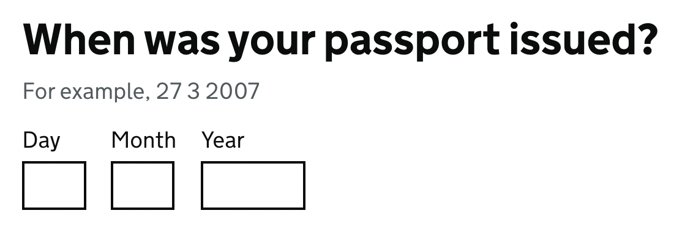

HTML Forms
Craig Abbott
Head of Accessibility, Digital
@abbott567
Forms are the backbone of all Digital Services
When you apply or renew anything on GOV.UK it’s essentially just a well designed web form.
“Users prefer less clicks” is one of the most persistent design myths
Research shows that breaking complex things into small manageable parts creates a more successful user journey.
Forms should be dynamic and as easy as possible to use
The user should not have to engage with anything which is not relevant.
Bad example:
Only answer this question if you answered ‘yes’ to the previous one
The basic building blocks of forms
- The form element
- Input elements
- Labels
- Legends
- Form groups
The form element
Inputs must be placed inside a <form> element. This creates a landmark so assistive technology users can find interactive elements easier.
<form>
<label for="username">Username</label>
<input id="username" type="text">
<label for="password">Password</label>
<input id="password" type="password">
<button>Sign in</button>
</form>
Input element
The input element is the main way to collect data from a user. They may type data into a field, or they may select options using buttons.
Inputs you type in
Some common inputs you type in are:
Input types you select
Some common input types you click on or select using a keyboard:
The ‘type’ is used for 3 things
- To activate HTML5 validation
- To set context for screen readers
- To show the correct virtual keyboard on devices like mobile phones
HTML5 validation is not recommended
It is not robust and it can get confusing.
Turning off HTML5 validation means you can implement your own accessible validation patterns using good content and interaction design.
Demo of HTML5 validation
Can be found at the following path:
/demos/html5-validation.html
The type of input can add context for screen reader users
If it reads out “input, type equals email”, then it’s clear that it you need to put an email address in the field.
But, the context is not always consistent
For example, type="number" may be called an “incremental edit text number field” in Safari. In Chrome and Firefox it may be called a “stepper”.
In Firefox there is sometimes a bug where it reads out “NaN” (not a number) when the field is empty.
The number type is a bit broken
It has the following accessibility issues:
- Chrome silently discards non-numeric input
- users can accidentally change number using the arrow keys without realising
- users can accidentally change the number using the scroll wheel on the mouse or the scroll gesture
- they appear as unlabeled in NVDA’s element list
- users of Dragon Naturally Speaking cannot dictate into them as expected
Dates can also be problematic
For example:
- Voiceover may ignore the label
- Voiceover can read dates as percentages
- Chrome, Safari and Firefox have inconsistent date pickers
- Chrome and Firefox date pickers may not be keyboard accessible
- Firefox bug which jams Voiceover when using a mouse
- Safari has a bug which doesn’t complete the full date when using Voiceover
Demo of input types
Can be found at the following path:
/demos/input-types.html
Research shows that text inputs can be made to work for most things
But, you need to have a clear label, and you need to provide additional attributes so browsers know which virtual keyboard to show.
The inputmode attribute can tell the browser which keyboard to show
This is particularly important for mobile devices.
<label for="age">Age</label>
<input id="age" type="text" inputmode="number">
Examples of virtual keyboards
inputmode="text"

inputmode="email"

inputmode="tel"
The text type can work better for numbers
<label for="age">Age</label>
<input id="age" type="text" inputmode="numeric" spellcheck="false">
More advanced examples can be found in the GOV.UK Design System.
The text type is also better for dates
Again, a good example can be found in the GOV.UK Design System:

Should you use type or inputmode?
As a general rule of thumb:
- avoid using
type="number"andtype="date" - use the other
typeattributes if the context is correct - for anything else use
type="text"and assign a suitableinputmodefor virtual keyboards - Test it thoroughly!
Helping the user identify the purpose of each input
For fields which are common on the web, you should mark them up correctly so that the browser can attempt to autocomplete data. You will need this to pass WCAG criterion 1.3.5 Identify Input Purpose
Autocomplete
By using the right autocomplete values, things like your name and address can be filled in quickly rather than being typed out repeatedly. But it will only work if the browser knows what the field is for.
<input type="text" id="full-name" autocomplete="name">
Autocomplete values
There is a full list of autocomplete values. So go through them and match them against your designs.
For example:
name= Full namegiven-name= First namefamily-name= Last nameemail= Email addresspostal-code= Postcode
Autocomplete should only be when users fill in their own data
If people are entering other peoples information, then you want to make sure you disable autocomplete, as some browsers will still try to be helpful if it thinks it might recognise a field.
<input id="claimant-name" type="text" autocomplete="off">
Labels
Every input needs a text label. This lets the user know what they need to use it for.
Labels and WCAG
Labels are covered by 4 WCAG criteria:
To cover all the WCAG criteria
- Every input must have a label
- Labels must be clear
- It must be obvious which input the label is related to
- The visible label must be part of the accessible label
- It must be obvious if a field is required or optional
Assigning labels
There are 2 ways to easily assign a label to an input. You could also use aria, but that overcomplicates things.
Using for and id:
<label for="last-name">
Last name
</label>
<input id="last-name" type="text">
Nesting:
<label>
Last name
<input type="text">
</label>
The ‘orphaned’ input
A really common accessibility issue is an input which looks like it has a label, but they’re not actually assigned to one another correctly.
How it looks in the code:
<label>Last name</label>
<input type="text">
How it looks on the page:
Demo of orphaned input
Can be found at the following path:
/demos/orphaned-input.html
Label in name
You can have different labels for visual and non-visual users. But, what is visible must also be in the accessible label too!
Pass example:
<label for="search">Search</label>
<input id="search" aria-label="Search for people, pages or blog posts" type="search">
Fail example:
<label for="search">Search</label>
<input id="search" aria-label="Find people, pages or blog posts" type="search">
Demo of label-in-name
Can be found at the following path:
/demos/label-in-name.html
The fieldset element
The <fieldset> element is used to group related inputs. This provides additional context. You should always use a legend with a fieldset.
Legend element
The <legend> provides a label for a grouped elements:
<fieldset>
<legend>Address</legend>
<label for="line1">Line 1</label>
<input id="line1" type="text" autocomplete="address-line1">
<label for="line2">Line 2</label>
<input id="line2" type="text" autocomplete="address-line2">
<label for="town-or-city">Town or city</label>
<input id="town-or-city" type="text" autocomplete="address-level2">
<label for="postcode">Postcode</label>
<input id="postcode" type="text" autocomplete="postal-code">
</fieldset>
Demo of fieldset and legend
Can be found at the following path:
/demos/fieldset-and-legend.html
Required fields
Many websites use an asterisk and assume people will know what it means.
<label for="surname">Surname *</label>
<input id="surname" type="text">
If you do use an asterisk, you must explain what it means before people use the form
This will probably do enough to pass WCAG 2.1. But it will still be awful for the user.
<p>Required fields are marked with an asterisk (*).</p>
<form>
<label for="first-name">First name *</label>
<input id="first-name" type="text">
</form>
Demo of asterisk and required fields
Can be found at the following path:
/demos/asterisk-and-required-fields.html
In user centred design, it’s likely most fields will be required
If you don’t need it, then why ask for it?
So, rather than marking every required field, you can mark the optional ones instead.
<label>Email (optional)</label>
Submitting a form
A form should not submit without a very deliberate action. This is covered by:
3.2.1 On focus
This simply means that tabbing to an element with the keyboard does not submit the form.
I’ve never seen this happen to date. So unless you’re doing something weird it’s probably not something to worry about.
3.2.2 On input
This one is more common. It means you can’t submit a form by selecting something other than a deliberate action.
For example, you can’t submit a form by selecting a radio button.
Button vs Submit
You should submit a form with a button or by using an input with type="submit".
A <button> element is more flexible, you can add images or icons by wrapping them in the code block.
<input type="submit" value="Continue">
<button>
Continue
<img src="arrow-right-icon.png" alt="">
</button>
Errors
Errors are covered by 3 WCAG criteria:
Error identification
You must highlight and name the field which caused the error. But, this criterion doesn’t really care if you tell the user why it’s broken.
For example:
There’s an error with the date your passport was issued
Error suggestion
Error suggestion goes a step further, and states that you need to tell the user what’s wrong with it.
For example:
The date your passport was issued must be in the past
Error prevention
Error prevention means that the user needs to be able to go review and change any inputs they’ve used.
Just having a working back button with good session management is acceptable, but a better option is to use the GOV.UK check answers pattern.
One of the biggest issues with errors is that people don’t know they’ve happened
So here are some other things you can do…
Append ‘error’ to the page title
This helps screen reader users quickly realise they’re still on the same page and there’s a problem.
<title>
Error: When was your passport issued? - Renew your passport - GOV.UK
</title>
Use an error summary
Putting an error summary at the top of the page means if somebody has made a mistake then can easily see that there is an error. It also helps people using a screen reader to quickly realise the page has changed.

Linking to the fields from the error summary
This makes it easy for users to navigate to the fields to fix them.
<a href="#first-name">Enter your first name</a>
...
<input type="text" id="first-name">
Demo of errors
Can be found at the following path:
/demos/errors.html
Feedback
I know this was a lot to cram into an hour session and I didn’t cover other form elements like radios or checkboxes.
Please fill out the feedback form, and if there’s anything you would like to see in the future let us know and we can structure some more sessions around those topics.
Thank you!
Craig Abbott
Head of Accessibility, Digital
@abbott567